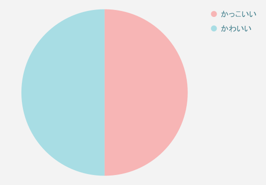
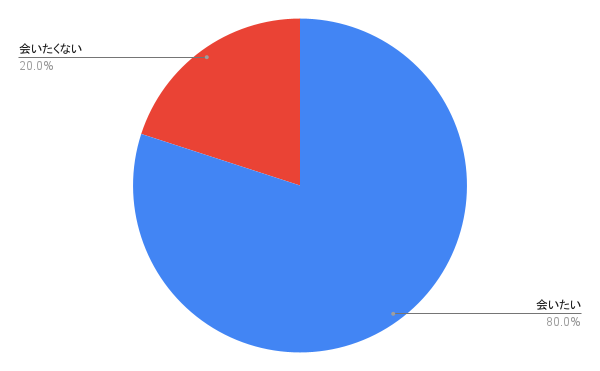
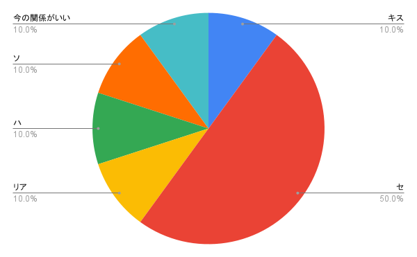
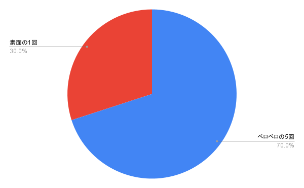

アンケート
Q1.れいさんは「いい人」だと思う？

Q2. れいさんは、かわいい？かっこいい？
Q3. れいさんに会ってみたい？
Q4. れいさんとどんなお友達になりたい？
Q5. 流れでするなら？
Q5. 生意気な後輩シリーズで特に好きなのは？
Q7. れいさんをオススメして！
れいさんのここが好き！

声がいい
敬語とタメ語の使い分けえぐい
思ってるよりふざけてておもしろい
自分の尺度で他人を計らず否定しない
真剣な話はふざけない
えっちなのもいい
真顔で茶番するから本気かネタかわからなくてこわい
充電何％でしょうかみたいなぷちクイズ出してくるのかわいい
努力してる
歌が天才！技術以上のなにかがある
これが正解！と言いたくなる100点の甘さと意地悪さ
言えないタイプが答えやすい誘導をしてくれて優しい
心の束縛がうまい
英語だと声低くなるのかっこいい
たまにガチ適当な時があるの笑う
イラストがかわいい
私物がおしゃれ
生活の質がいい
言葉責め学校の先生になって欲しい
過激な内容でツボるのがれいさんぽくてこわい
ちょっとダメなところも含めて全部好き